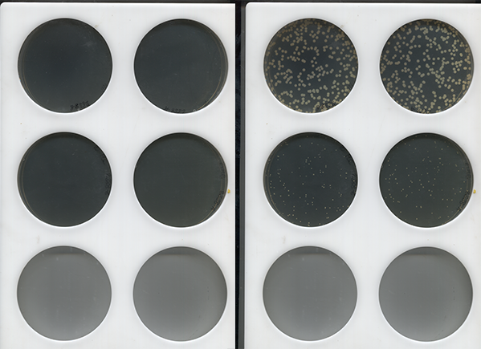

Image specifications
ColonyScanalyser requires clear, high-resolution images from a static viewpoint. Flatbed scanners are a simple and inexpensive way to achieve this.
A program is needed to automatically set the scanners to take images at the desired set intervals.
Scanners
Scanners with a resolution of at least 300 DPI are recommended, though greater image density will enable greater colony differentiation and improve first appearance detection.
Plates and holders
To allow the colonies to easily be discerned in the image, a strongly contrasting background is needed. An easy technique is to paint the bottom of the plates black, or place them on black fabric.
Image formats
Images should be saved in a lossless format. ColonyScanalyser currently supports png and tiff image files.
Image file names
Images need to be saved with a file name that contains the date and time stamp when the image was taken. This information must be in YYYYMMDD HHMM (year/month/day hour/minute) format.
Date and timestamp detection is flexible and can tolerate a wide range of separator characters. For example these are all valid:
image20190624_1034.tif
image2019-06-24_11-04.tif
2019 06 24_1134_image.tif
...
Examples
The image below shows the same set of plates at the start (left), and the end (right) of growth. The plates on the top row show good colony growth, while the plates on the middle row show inhibited growth.
The plates on the bottom row are empty, but show the importance of a high contrast background.
